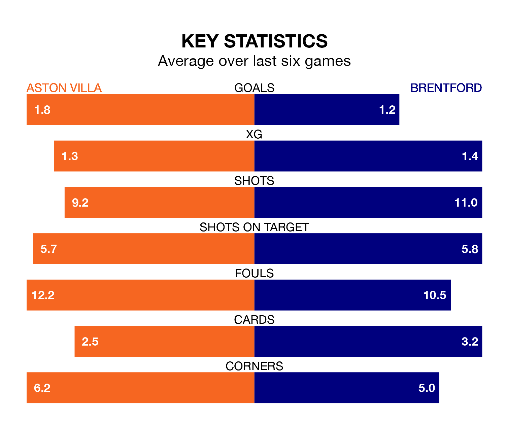

Aston Villa host Brentford in Saturday's match at Villa Park looking to bounce back from defeat last time out in the Premier League.
The Villa, who sit fourth in the league after 31 games, fell to a 4-1 away defeat to Manchester City on Wednesday.
They face a Brentford side who secured a draw in their last match, a 0-0 tie with Brighton and Hove Albion, and who sit 17th in the table.
With 63 goals in 31 games so far this season, Villa are scoring more than average in the league with 2.0 goals per game. And they are conceding fewer than average, letting in 46 goals at a rate of 1.5 per game.
Brentford, meanwhile, are below average scorers, with 1.4 goals per game, compared to a league average of 1.6. They have conceded 1.8 goals per game.
In Ollie Watkins, the Villa have one of the league's most on-form strikers so far this season. He has notched 16 goals in 30 appearances, to sit second in the scoring charts.
The Bees's top scorers, with seven goals each, are Bryan Mbeumo and Yoane Wissa.
The home side are in mixed form in the Premier League, with three wins and a draw from their last six games.
With no wins and three draws over that period, the visitors' form is much worse – they have taken three points from 18, compared to Villa's 10.
In the last 10 years, Villa and Brentford have played each other on 12 occasions. Villa won two of them, Brentford four, and they drew six times.
On average, the Villa scored 1.3 goals and the Bees 1.4 in those matches.
Their last meeting was on December 17, when Villa won 2-1 away.
Saturday's match will be refereed by Michael Salisbury, who has taken charge of 11 Premier League games so far this season, issuing two red cards and booking 46 players. He has awarded nine penalties.
The last Villa game Salisbury refereed was a 3-1 away win against Burnley on August 27. He is yet to oversee a match featuring Brentford this season.
Updated: 16:41 (UTC), 04/04/24